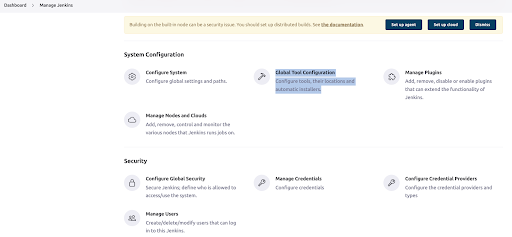

Creating a CI/CD pipeline in Jenkins
Pre Requisistes
For sake of this documentation, jenkins built-in sample script is used to create and execute a cd/cd pipeline in jenkins. In the built-in script maven is used as M3, so one must install Maven plugin inside jenkins and name it M3. Usually maven is already present inside jenkins and can be configured from Global Configuration Tools. Following steps demonstrate configuring Maven plugin.
- Go to Jenkins
Dashboardand click onManage Jenkins - In
Manage Jenkins, underSystem Configurationsection, click onGlobal Tool Configuration.

- In
Global Tool Configuration, scroll down to Maven section and click on the respective option under theMavenSection (should beMaven installations…orAdd Maven).
.png)
-
Under
Maven installations, enterM3in “name” text box, checkInstall Automaticallyand selectVersiongreater than 3, then clickApplyandSave. -
This should install Maven version 3 and configure as
M3.
Steps for Jenkins pipeline creation
-
After installing Jenkins and having all the suggested plugins installed, go to Jenkins dashboard and click on
Create Job. -
On the next page, give your pipeline a name, select
Pipelineand clickOK.
.png)
-
A
Configurationpage for the pipeline will appear. -
Select
Build Triggersoptions andGeneraloptions according to need and scroll down to the Pipeline section.
.png)
-
Definition section contains configuration for stages and steps of the pipeline. Under
Definitionsection, you can either choosePipeline scriptand try writing your own script or try some sample pipeline (likeHello World,Github+Mavenetc) or you could selectPipeline script from SCMand give a github repository containing configurations of Pipeline. -
Press
SaveandApply. -
This should take you to the Pipeline and you can build the pipeline and if no unresolved dependencies are present, the pipeline should build without any error.